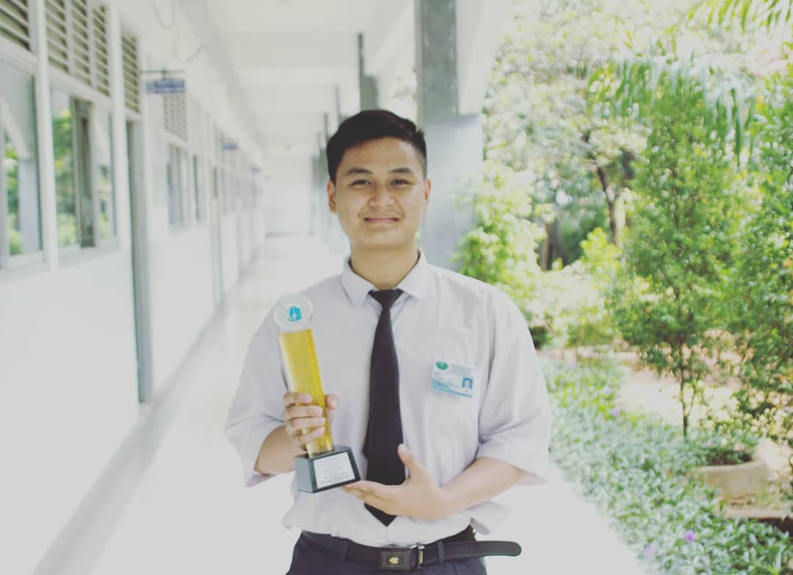

About
Nama saya Rolando, saya lahir di jakarta pada tanggal 26 september 2003 dan saya tinggal di Villa Taman Bandara Blok B2 No.7 Dadap, Tangerang, Banten dan hobi saya adalah berenang, tenis meja, bulu tangkis, basket, gitar, game. Prestasi yang pernah saya raih adalah Juara 3 Solo gitar tingkat kabupaten Juara Harapan 3 Solo gitar tingkat Kabupaten , Juara Harapan 2 Web Techonology Tingkat Kabupaten.